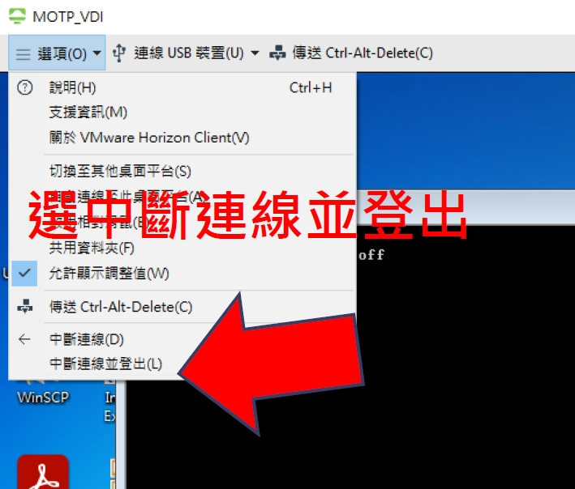
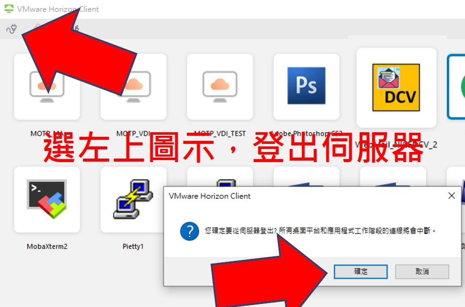

登入
登入
 請輸入正確密碼
請輸入正確密碼
 忘記密碼
忘記密碼


 首頁
首頁
 管理
管理
 導覽
導覽
 登入
登入

 共享資源
共享資源
共享資源
VDI 與 MOTP 使用說明
 手冊下載
手冊下載
顯示遠端主機圖檔
使用者在遠端主機做好圖檔需要顯示，需要依循下列方式處理：
- 使用 Putty RDS 應用程式，連接安管外主機(如安管外 HPC)或透過跳板連接安管內主機(如安管內 HPC)
- 執行程式或產製圖檔，如多個圖檔可壓縮處理後方便傳送
-
以電子郵件方式直接將產品寄送到外部電子郵件信箱
mutt -s “Mail Subject” MailAccount@gmail.com a ${ OneAttachFile } < MailContent
- 接下來您就可以在個人電腦收信後進行圖檔或資料處理
增加 VDI 系統使用網段
- VDI 浮動桌面使用 原 IP 網段為 10.6.99.0 ~ 253
- 因應授權數增加，新增網段 10.6.98.0 ~ 253
- 同仁需要因應：主機存取限制的設定需要加入新網段
讀卡機與憑證測試
電腦需要具有可使用的讀卡機且可讀取自然人憑證，請依下列步驟測試：
安裝 HiCOS 卡片管理工具 (https://moica.net.gov.tw/download_1.html)
安裝 HiCOS 後進行環境檢測
如果測試成功，但使用公文系統仍有問題，請洽資訊中心並告知上述測試結果
如果讀卡機與憑證測試失敗，請先安裝 / 更新讀卡機驅動程式，測試成功後方可繼續測試公文系統
讀卡機驅動程式更新方法如下：
在「開始」的地方按滑鼠右鍵，選擇「電腦管理」
左側選擇「裝置管理員」，展開後尋找「智慧卡讀卡機」
在「智慧卡讀卡機」設備上按滑鼠右鍵，選擇「更新驅動程式」
依據您使用的讀卡機是否附上 Windows 10 的驅動程式，決定選擇「自動搜尋驅動程式」或「瀏覽電腦上的驅動程式」選項
手冊下載
MOTP 申請與認證 問題：資訊中心網路管理課
- 電話：2349-1291 ~ 1294
- 電子郵件 netadm@cwb.gov.tw
AD 帳號申請與 VDI 使用問題：資訊中心系統控制課
- 電話：2349-1286 ~ 1288
- 電子郵件 scs@cwb.gov.tw
手冊下載
- MOTP 帳號：兩階段認證系統，需要申請使用權限
- 資訊中心 AD 帳號 VDI：VDI 認證使用帳號與密碼
- VDI：虛擬桌面系統，提供 VDI 浮動桌面與 RDS 應用程式兩個功能 VDI
- VDI 浮動桌面：全功能 Windows 桌面，可提供所有 Windows 程式功能
- RDS 應用程式：執行單一應用程式，執行效率高
手冊下載
- VDI 系統只能連網本局安管外各主機，Internet、安管內、DMZ 與其他區域無法連線
- 如果要連網安管內、DMZ與其他區域需要 申請網路連線
- 被連線主機如有存取權限控制需設定允許 VDI 的 IP 連入
- VDI 浮動桌面使用 IP 網段為 10.6.98.0 ~ 25310.6.98.0 ~ 253、10.6.99.0 ~ 253
- RDS 應用程式使用 IP 為：10.6.129.510.6.129.5、10.6.129.6
手冊下載
- 填寫中央氣象局遠端連線申請單、員工保密切結書與電腦帳戶異動申請表
- 非本局同仁需填寫保密切結書、第三方保密切結書與相關合約封面
手冊下載
- 請先 安裝 VMWare Horizon Client 軟體
- 目前最新版本 是 2103 ，下載連結為https:// reurl.cc/raplky
- 下載 MOTP 軟體 (Android 或 iOS 版)
手冊下載
- 在新增伺服器中新增 61.56.15.85 伺服器
- 點擊 ICON 後即可連線
手冊下載
VDI 浮動桌面
公文系統專用
可執行非應用程式集區內
的其他程式
RDS 應用程式
使用氣象局 WebMail 系統
使用 NICE DCV 連接 WINS 系統
連線使用本局內部各種網頁
RDS 應用程式
使用 Putty 連線 Linux 伺服主機
各應用系統維護人員使用
RDS 應用程式
使用 RDP 連線 Windows 伺服主機
各應用系統維護人員使用
RDS 應用程式
整合型連線工具
各應用系統維護人員使用
RDS 應用程式
使用 VNC 連線 VNC Server
各應用系統維護人員使用
手冊下載
- 登入虛擬桌面時，請將連線 USB 裝置中的勾勾全部取消
- VDI 僅支援 EZ100 晶片卡讀卡機
資料交換需要使用隨身碟當媒介
操作公文系統增修附件時，如何存取個人電腦檔案路徑？
手冊下載
直接離開系統會保留您的階段工作，資源無法給下一個使用者使用，請依程序離開系統
 手冊下載
- 電腦瀏覽器連 http://10.6.1.149/MOTPPortal/
- 請使用氣象局內網路登入，無法使用局內網路請聯絡網路管理課協助註冊
- 點選載具管理
系統自動寄出如下主旨的郵件，如未收到請與網管課聯繫
選擇軟體註冊
啟動手機「MOTP Client」APP
(如已原有註冊載具請點選手機 APP 右上 號創建新載具)將您電腦螢幕上的紅色 8 位數字輸入到手機當做初始金鑰，點選下一步。 (如未出現數字金鑰，請嘗試登出註冊網頁再重新登入)
將手機上顯示的序號、機器碼及 OTP 碼輸入電腦對應欄位，點選確定
如果驗證成功，註冊已成功完成。
如果驗證失敗，依下法再次確認
先選左上方箭頭回首頁
如果驗證成功，註冊已成功完成。如 OTP 碼再次驗證失敗，見下一頁『常見狀況排除』，或請聯絡網管課
網頁無法取得初始金鑰
請登出註冊網頁再重新登入，重新嘗試。
註冊出現錯誤
可能已存在載具，或是過程步驟輸入錯誤，請先確認『載具：Server_0 』是否存在，刪除後重新註冊。
步驟如下：
- 主畫面點選『載具： Server_0 』
- 載具管理頁面下，刪除『 Server_0 xxxxxxxx 』
- 依照 前面步驟 重新註冊
手冊下載
使用者在遠端主機做好圖檔需要顯示，需要依循下列方式處理
安內主機設定 Mail Relay 到安管內 電子郵件伺服器 http://10.6.1.149/MOTPPortal/
使用 Putty RDS 應用程式，連接安管外主機(如安管外 HPC)，或透過跳板連接安管內主機(如安管內 HPC)
執行程式或產製圖檔，多個圖檔可壓縮處理後方便傳送
以電子郵件方式直接將產品寄送到外部電子郵件信箱
接下來您就可以在個人電腦收信後進行圖檔或資料處理
手冊下載
 回共享資源列表
回共享資源列表